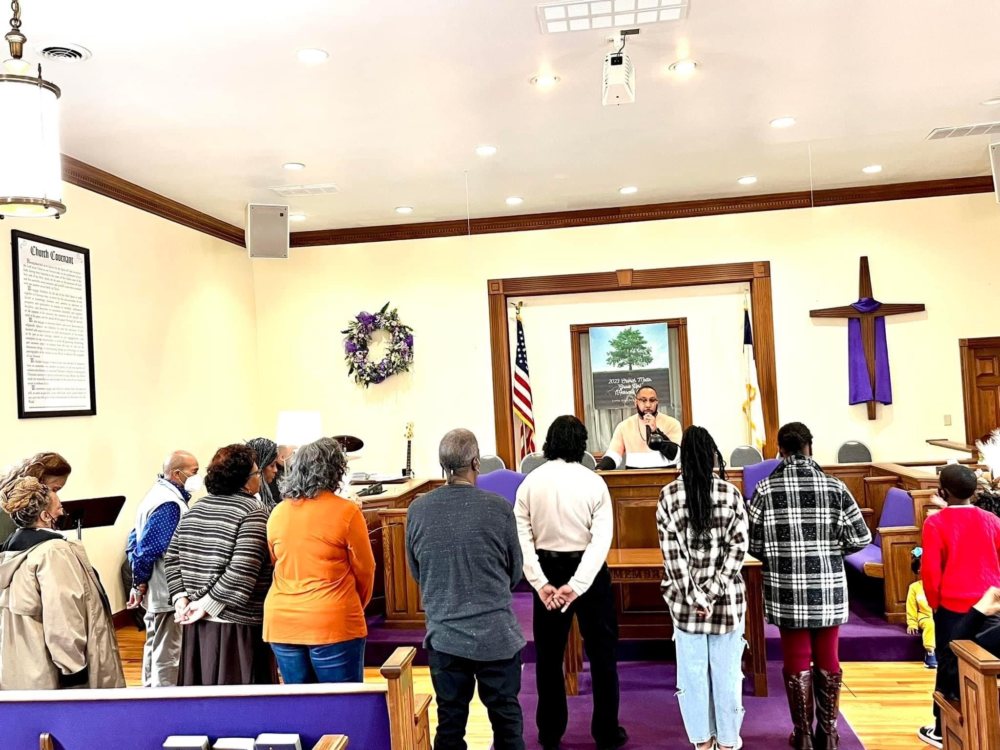
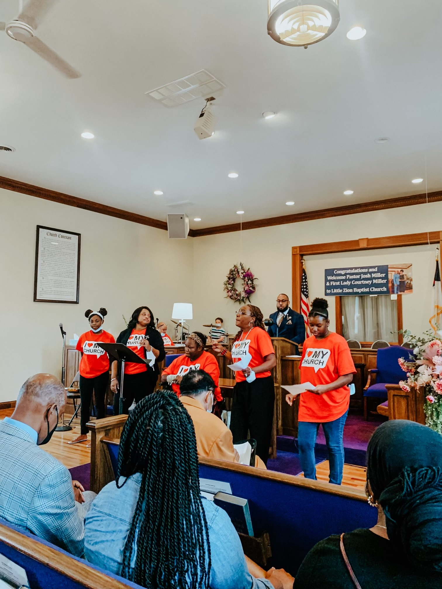
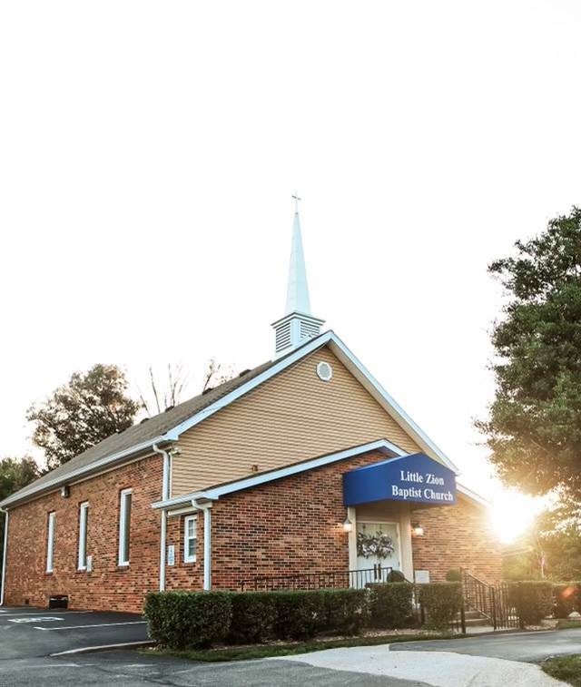

Declaration of Faith
We are a family of believers in Jesus Christ, called to show forth the
joy of living a Christ centered life. We accomplish this through our
freedom in worship and our structured doctrinal discipline that empowers
us to reflect the character and nature of Christ in the earth. We are to
live as beacons of light in dark places. We are a sanctuary of relief
and a refuge of hope. Our purpose is to refresh the weary and heal the
broken through providing a genuine authentic encounter with the Christ.
Love is of God. We will love God as He loves us and love others as He
loves them. We will pursue excellence in all we do, as God is excellent
in all He does. We will accept others as they are because God has
accepted us as we are. We will be just in our actions toward others
because God delights in the just. We will show grace to others because
God has shown us His amazing grace. We will be generous to others
because we owe it to God and to them, and we will be faithful to God and
His people because God remembers, and enjoys the faithful.

Vision Statement
Our ministry is committed to serving in God’s excellence with integrity
and compassion for our community, our nation, and our world.
We are striving to become an oasis of hope within the community by
promoting and providing education, awareness, as well as financial
independence.
We strive to challenge and build up spiritual and community leaders
through mentoring and the pursuit of spiritual and academic excellence.
We seek to reach the lost and the broken and serve them with the upmost
dignity and respect. Our environment is a loving and inviting atmosphere
that inspires you to worship; we believe that God must be worshipped in
spirit and truth.
We embrace freedom in worship because the Word says, “Where the spirit
of the Lord is, there is liberty.”
We are a ministry founded on the true, unfailing, everlasting Word of
God; we believe God’s Word in its entirety believing we can do what it
says we can do, be who it says we can be, and have what it says we can
have.

Mission Statement
Expand| Exalt | Equip
Together, it is our mission and responsibility to Expand God’s kingdom
by sharing the gospel to the lost and broken.
We Exalt God’s greatness by assembling together in worship and embracing
the freedom of worshipping the true and living God.
We seek to Equip God’s people by building them up through the Word of
God and sharing the message of hope, salvation, and the promises of God
once